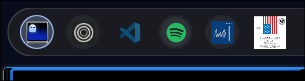

Shelllist / visual study · revisedArtwork + panel access + transport
Artwork opens. Transport plays.
This is not an isolated album thumbnail. It is a recognizable entry point to the media panel, immediately followed by back, play/pause and forward controls. Visual coherence must preserve both jobs—and make their click targets distinct.

Your screenshot crop · the transport context is reconstructed below.
One media group. Two kinds of action.
Cover: recognize the current content; click to open Media. Adjacent controls: previous/rewind, play/pause, next/forward. Keep the filled play/pause circle as the playback emphasis. Do not add a play overlay to the artwork.
Artwork → Media panelBack / pause / forward → playback
Judge the whole group
Click the cover to open a local panel preview. Transport buttons only update the demo.
00 / current structure
Artwork is already a button beside transport
Reconstructed from MediaChip.qml and MediaControls.qml: 34px cover target with 26px artwork; 4px gap; 30 / 36 / 30px transport targets with 2px gaps. This is the reference geometry—not a claim that the screenshot shows all of it.
01 / minimal, role-preserving fixRecommended
A framed panel launcher
Cover → open MediaAdjacent buttons → transport
34px opener / 24px art / 5px corners / transport unchanged
Give the artwork a quiet circular button surface, matching the app row, with a smaller rounded-square cover inside. It reads as a clickable destination, while the stronger filled pause/play button remains the obvious playback action.
Why it fits: keeps now-playing recognition, existing hit targets and spacing. No new symbol, overlay, transport control or width. Hover belongs to the whole opener, not just the image.
02 / uniform circular silhouettes
A circular cover button
Cover → open MediaAdjacent buttons → transport
34px opener / 28px circular art / transport unchanged
Mask the artwork to a circle inside the same 34px opener. The row becomes visually consistent without hiding the cover or combining it with play/pause. Keep the neutral rim and shared pointer feedback.
Cost: loses cover corners and edge text, especially for podcasts and books. It must not spin like a record or gain a play overlay: its action is still open Media.
03 / clarify media ownership
Group opener and transport
Cover → open MediaGroup background → no action
Shared neutral container / four independent buttons / +8px width
A low-contrast pill contains the existing cover and all three existing transport buttons. It makes their relationship explicit and separates media from application launchers. The artwork remains its own panel-opening button.
Cost: adds visual weight and padding. The group itself is not clickable; hovering the cover must not highlight the entire group. This replaces the earlier misleading cover-plus-triangle capsule.
04 / most explicit panel access
Cover with a disclosure cue
Cover + chevron → one openerAdjacent buttons → transport
A tiny downward chevron makes the secondary job visible: there is a panel behind this cover. Cover and chevron form one button and one hit target; neither toggles playback. Keep actual transport immediately beside it.
Cost: introduces a non-circular shape and extra width. Prefer this only if users miss the panel entry point; option 01 is quieter. The chevron is not another menu or an additional command.
Demo is playing. Cover clicks open a panel preview without changing playback. Transport clicks never open the panel.
Full-context rows are intentionally not squeezed on narrow screens: scroll horizontally to inspect them. Browser focus outlines and Tab navigation are for this design-review page, not a proposed Shelllist key model.
Revised recommendation
Option 01, with transport left intact.
Use the small rounded cover in a neutral circular button. It balances the artwork against neighboring app icons and communicates a real hit target without competing with the filled play/pause control. Its two meanings remain intact: “this is playing” and “open its media panel”.
If the ownership of the controls is unclear, try option 03. If discovering the panel is the problem, try option 04. These solve different problems; neither needs another play indicator.
Separate actions: cover invokes the existing openSurface("media") route only. Back, play/pause and forward retain their independent operations, capability guards and acknowledgement behavior.
Stable recognition: keep artwork unchanged in color. Loading or failed artwork gets a media glyph inside the same opener; it still opens the panel. Keep “Open Media” and the current track/player in the accessible name.
Shared feedback: retain the existing shared button hover/pressed behavior; no play overlay, new tooltip or whole-group click handler. Actually mask rounded artwork in Qt Quick; a rounded backdrop alone does not clip its image.
Respect density: full examples show transport. Existing compact mode may hide transport, but must retain the cover’s panel-opening action. Do not use compact mode to justify omitting controls from this comparison.
Before shipping: Qt tests should verify that cover clicks open Media without transport, transport clicks never open Media, failed artwork preserves the opener, and compact mode keeps that route. Retain seek/track mode and capability coverage.
What changed from the first proposal
Removed the icon-only recommendation: it sacrifices the content-recognition job you want to keep. Removed the extra passive play triangle: real transport is already beside the opener. Dropped dimming as a main direction: geometry and button hierarchy address the mismatch without compromising dark covers. Every revised option shows the same actual transport structure and retains artwork as the panel entry point.